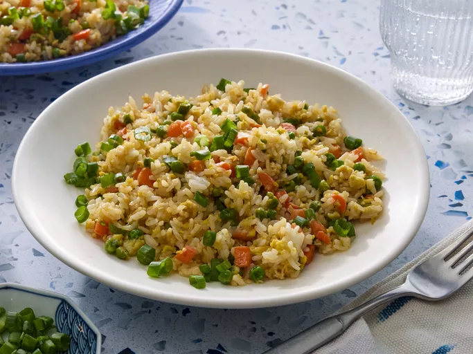

Fried Rice

image from Allrecipes.com
Description
Fried rice is a simple way and somewhat convenient way to empty your leftovers.
Ingredients
- Cooked rice
- Salt
- Pepper
- Eggs
- Garlic optional
- Soy Sauce optional
- Your choice of meat optional
- Scallions optional
- Diced Carrots optional
- Green Peas optional
Steps
- Chop the scallions and set aside the green parts to be used for garnishing and the white parts for cooking
- Heat up your choice of cookware(e.g. Skillet, Cast Iron, Griddle, Wok) until it starts to smoke then immediately turn the heat down.
- Add oil and spread it around until it covers most of your cooking surface.
- Put in your choice of meat and cook. Optionally, add in the garlic and the scallions when the meat is almost done.
- Before the garlic turns brown, add your rice and turn up the heat. Immediately stir to avoid burning the garlic. You can also add the eggs, onions, and peas at this stage.
- Add in soy sauce and additionally add oil if the rice sticks to your cooking surface.
- Stir fry until and optionally, toss the rice until you see most of the rice grains separate from each other. At this point, add salt and pepper to taste.
Home